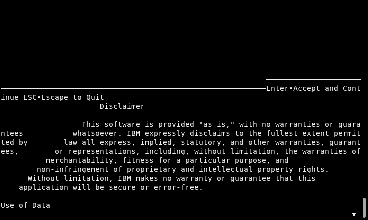

Db2 Shift Installation
Installation
The Db2 Shift program (db2shift) is a single executable image that can be run directly on Linux. This is a bundled application which means that it contains files and settings that are part of the executable code. From a user perspective, no additional software is required to run it.
The program does not create any directories on your system, but it will generate files during the execution of a shift. A best practice would be to create a new directory only for the purposes of the running the Db2 Shift code. Place the program into this directory and make sure that it has the execution bit set.
chmod +x ./db2shift
There are currently three versions of the Db2 Shift program, depending on which Linux distribution you are running. The versions have been compiled for:
- CentOS 6, Red Hat 6 - db2linux-centos6.zip
- CentOS 7, Red Hat 7 - db2linux-centos7.zip
- CentOS 8, CentOS Stream, Red Hat 8 - db2shift-centos8.zip
- Ubuntu 18.04, 20.04 - db2shift-ubuntu20.zip
Additional versions may be added depending on feedback from users. The program will work in command mode for all environments. If you attempt to use the UI mode, the screen may look something like:

If your display looks like this then you will have the wrong version installed. If you are running on a different platform than those listed above, please contact us directly. See the Support section for details.
Program Download
The program is currently in Technical Preview which requires that an IBMer to access the code. The program will be placed into a public Technical preview website when the code has been certified for use. Until that time, IBMers are asked to retrieve the code via the Db2 Shift Technical Preview code folder.